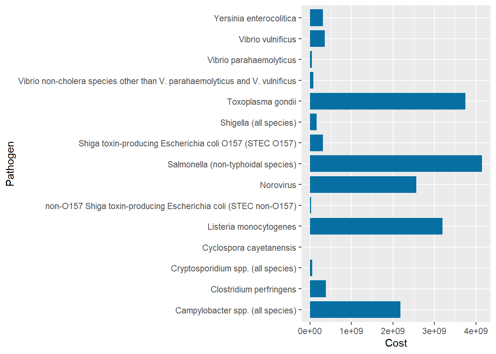
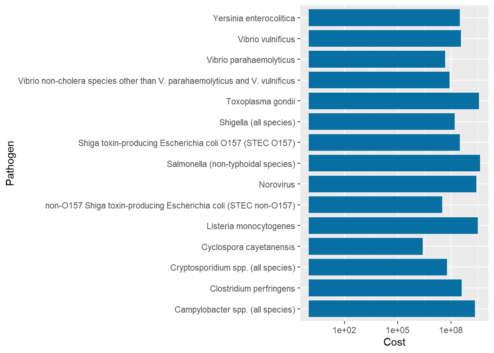
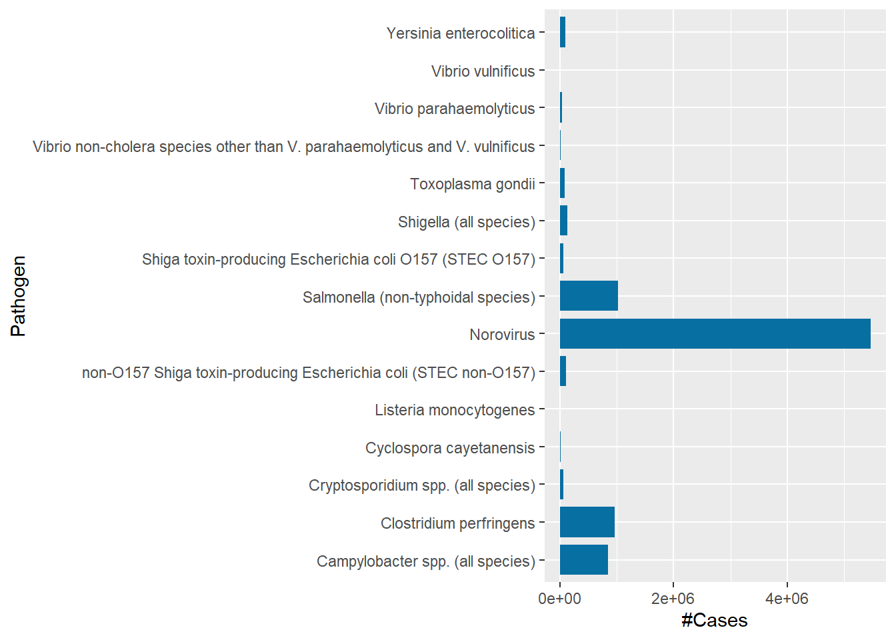
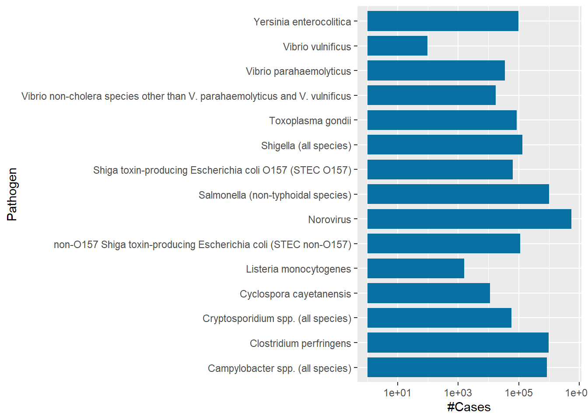
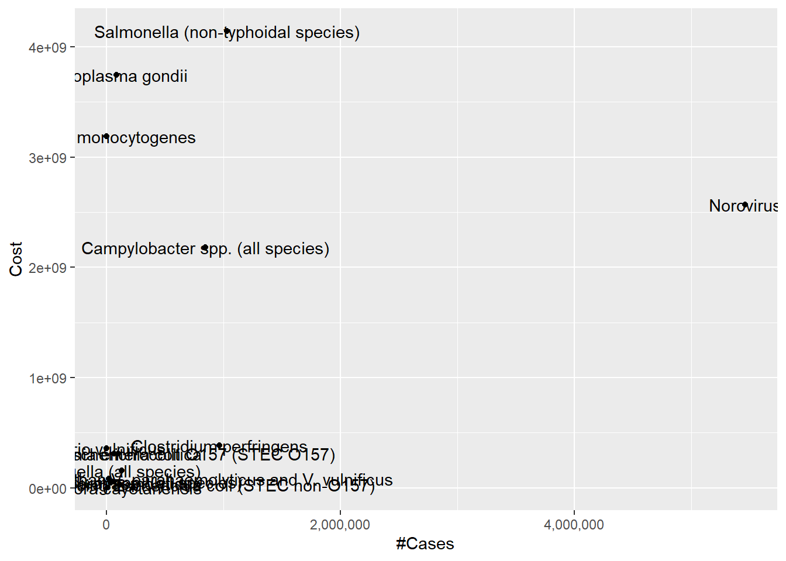
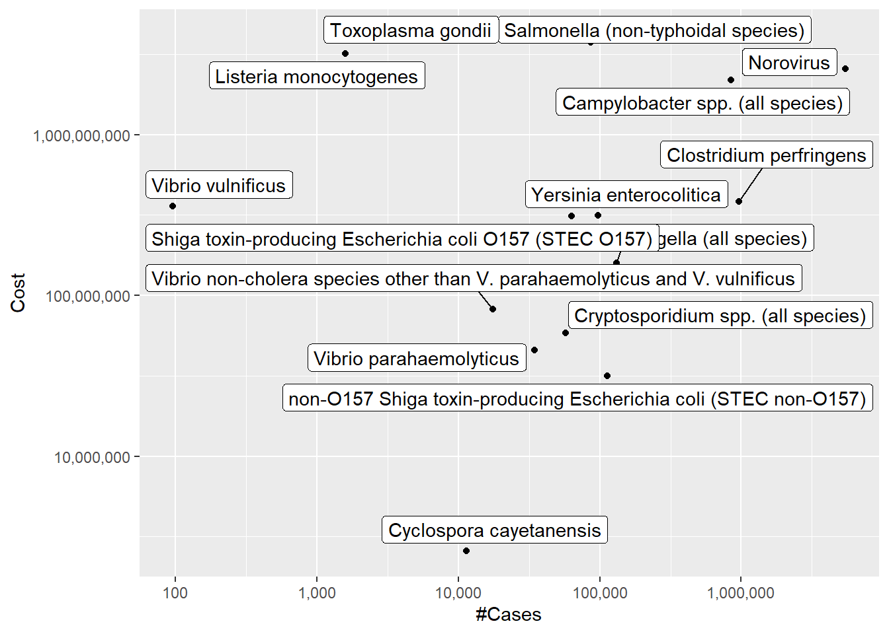

library(tidyverse)
library(ggplot2)
library(readxl)
library(dplyr)
library(stringr)
library(shadowtext)
library(scales)
knitr::opts_chunk$set(echo = TRUE, warning=FALSE, message=FALSE)Challenge 5
challenge_5
pathogen_cost
Introduction to Visualization
I am working on the Cost of Pathogens dataset for the year of 2018.
Read in data
Eventhough the file name says the data contains 15 pathogens, the actual dataset has 27 rows which means there are certain rows to be dropped. There are 3 columns/variable; the name of the pathogen, number of cases and the total cost caused by the pathogen in the year.
pathogen <- read_excel("_data/Total_cost_for_top_15_pathogens_2018.xlsx", skip = 5, col_names = c("Pathogen", "#Cases", "Cost"), n_max = 15)
#options(scipen=999)
#head(pathogen)
dim(pathogen)[1] 15 3#pathogenBriefly describe the data
Vibrio vulnificus had the least number of cases, just 96 cases, in 2018 while Norovirus came first with 5461731 reported cases. Cyclospora Cayetanensis cost the least in total ($2571518) and Salmonella (non-typhoidal species) cost the most that totalled to 4142179161.
summary(pathogen) Pathogen #Cases Cost
Length:15 Min. : 96 Min. :2.572e+06
Class :character 1st Qu.: 26114 1st Qu.:7.007e+07
Mode :character Median : 86686 Median :3.133e+08
Mean : 594314 Mean :1.171e+09
3rd Qu.: 488139 3rd Qu.:2.374e+09
Max. :5461731 Max. :4.142e+09 pathogen[which.min(pathogen$`#Cases`),]# A tibble: 1 × 3
Pathogen `#Cases` Cost
<chr> <dbl> <dbl>
1 Vibrio vulnificus 96 359481557.pathogen[which.max(pathogen$`#Cases`),]# A tibble: 1 × 3
Pathogen `#Cases` Cost
<chr> <dbl> <dbl>
1 Norovirus 5461731 2566984191.pathogen[which.min(pathogen$Cost),]# A tibble: 1 × 3
Pathogen `#Cases` Cost
<chr> <dbl> <dbl>
1 Cyclospora cayetanensis 11407 2571518.pathogen[which.max(pathogen$Cost),]# A tibble: 1 × 3
Pathogen `#Cases` Cost
<chr> <dbl> <dbl>
1 Salmonella (non-typhoidal species) 1027561 4142179161.Tidy Data (as needed)
The data has been mutated by adding a new variable called Average Cost per cases so that we can study how the cost per cases of each pathogen varies.
pathogen %>%
mutate(Avg_Cost_per_case = Cost/`#Cases`)# A tibble: 15 × 4
Pathogen #Case…¹ Cost Avg_C…²
<chr> <dbl> <dbl> <dbl>
1 Campylobacter spp. (all species) 845024 2.18e9 2.58e3
2 Clostridium perfringens 965958 3.84e8 3.98e2
3 Cryptosporidium spp. (all species) 57616 5.84e7 1.01e3
4 Cyclospora cayetanensis 11407 2.57e6 2.25e2
5 Listeria monocytogenes 1591 3.19e9 2.00e6
6 Norovirus 5461731 2.57e9 4.70e2
7 Salmonella (non-typhoidal species) 1027561 4.14e9 4.03e3
8 Shigella (all species) 131254 1.59e8 1.21e3
9 Shiga toxin-producing Escherichia coli O157 (STEC O15… 63153 3.11e8 4.93e3
10 non-O157 Shiga toxin-producing Escherichia coli (STEC… 112752 3.17e7 2.81e2
11 Toxoplasma gondii 86686 3.74e9 4.32e4
12 Vibrio parahaemolyticus 34664 4.57e7 1.32e3
13 Vibrio vulnificus 96 3.59e8 3.74e6
14 Vibrio non-cholera species other than V. parahaemolyt… 17564 8.17e7 4.65e3
15 Yersinia enterocolitica 97656 3.13e8 3.21e3
# … with abbreviated variable names ¹`#Cases`, ²Avg_Cost_per_casehead(pathogen)# A tibble: 6 × 3
Pathogen `#Cases` Cost
<chr> <dbl> <dbl>
1 Campylobacter spp. (all species) 845024 2181485783.
2 Clostridium perfringens 965958 384277856.
3 Cryptosporidium spp. (all species) 57616 58394152.
4 Cyclospora cayetanensis 11407 2571518.
5 Listeria monocytogenes 1591 3189686110.
6 Norovirus 5461731 2566984191.Univariate Visualizations
BLUE <- "#076fa2"
ggplot(pathogen) +
geom_col(aes(Cost, Pathogen), fill = BLUE, width = .8)
ggplot(pathogen) +
geom_col(aes(Cost, Pathogen), fill = BLUE, width = .8) +
scale_x_continuous(trans = "log10")
ggplot(pathogen) +
geom_col(aes(`#Cases`, Pathogen), fill = BLUE, width = .8)
ggplot(pathogen) +
geom_col(aes(`#Cases`, Pathogen), fill = BLUE, width = .8) +
scale_x_continuous(trans = "log10")
Bivariate Visualization(s)
ggplot(pathogen, aes(x=`#Cases`, y=Cost, label=Pathogen)) +
geom_point() +
scale_x_continuous(labels = scales::comma)+
geom_text()
ggplot(pathogen, aes(x=`#Cases`, y=Cost, label=Pathogen)) +
geom_point()+
scale_x_continuous(trans = "log10", labels = scales::comma)+
scale_y_continuous(trans = "log10", labels = scales::comma)+
ggrepel::geom_label_repel()